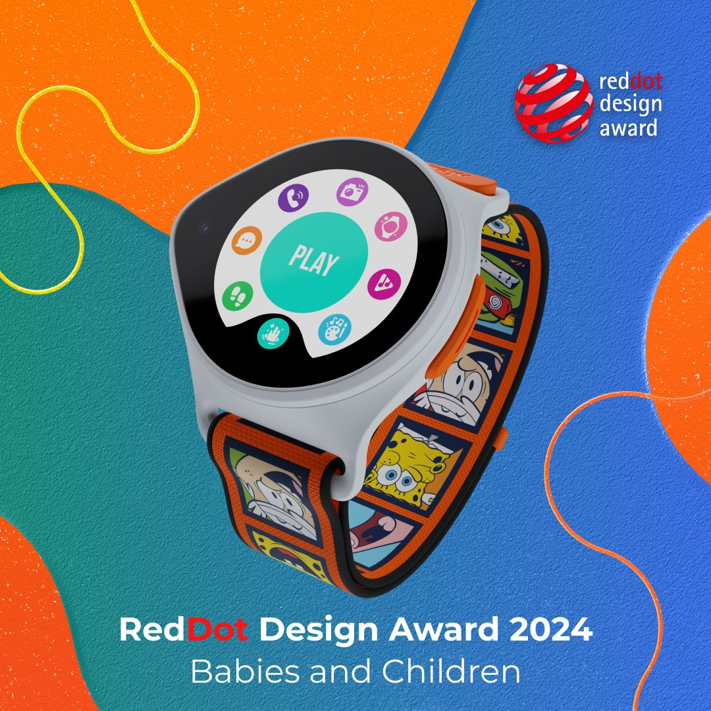
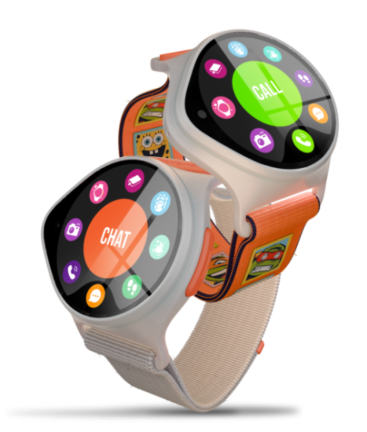

NickWatch — Smartwatch for Kids Red Dot Award
Wearable UX · Feature design · Children’s product
We designed and developed new interactive watch features for Nickelodeon’s kid‑focused wearable—bringing playful UX to everyday utility and earning recognition for product design.

